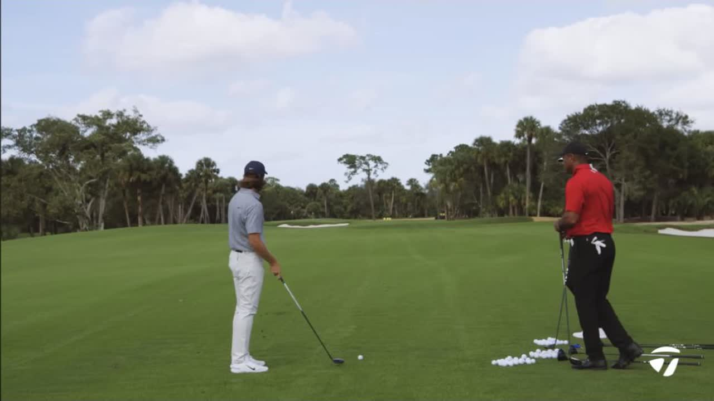
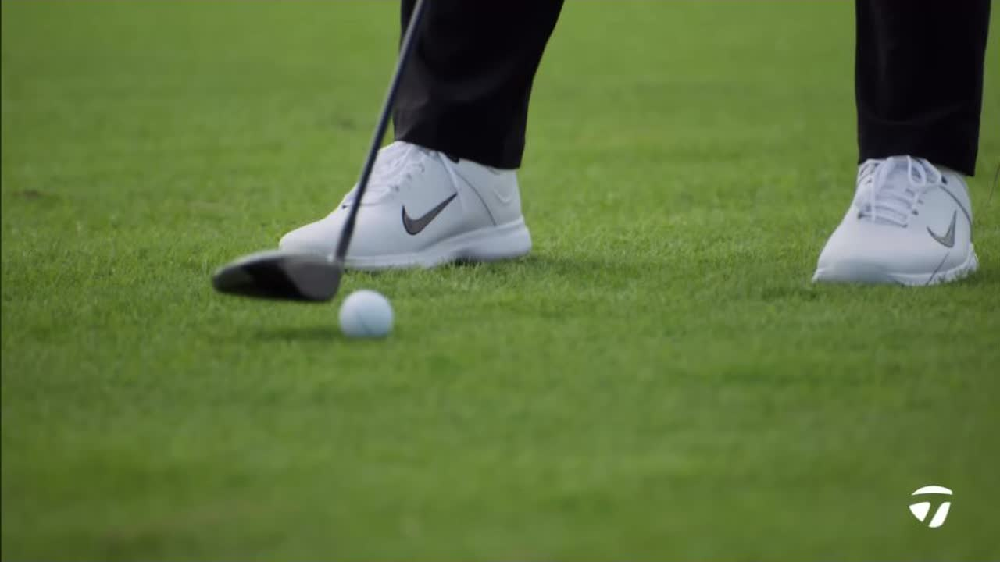
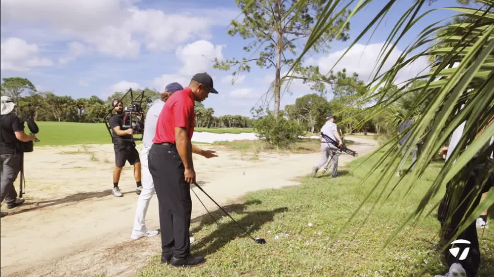
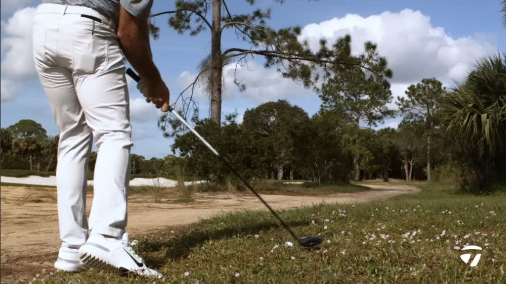

Executive summary
There is no single correct fairway-wood shot
Tommy Fleetwood, Scottie Scheffler, and Tiger Woods begin around 270–276 yards from a green with wind from the right and generally helping. Fleetwood uses a 5-wood whose normal carry is about 250–255 yards and works his familiar right-to-left shape with the wind. Scheffler does not carry a 5-wood; he uses a 3-wood with a stock carry near 265 yards, chokes down, and cuts it to remove speed. Tiger's discussion centers on a 5-wood built for options: roughly 255 yards, workable both ways, and especially valuable for steep chip-like shots from rough.
The clinic then moves into target strategy and a rough demonstration. The players do not aim at flags in isolation. They inspect the landing window, the easiest recovery, the front edge or bunker upslope they can guarantee reaching, and the danger created by a miss on the opposite side.
Distance boundary. These are player-specific numbers spoken in the session. The video does not identify exact lofts, shafts, launch conditions, or a complete carry chart. “270 yards” describes the exercise; wind, roll, and target position change what each player needs to carry.
Three operating systems
Club choice follows the shots each player trusts
Fleetwood: shape first
His stock 5-wood is about 250–255 yards. From roughly 272 downwind, he starts right of the pin and lets his normal right-to-left flight and the crosswind bring the ball back.
Scheffler: one 3-wood, many speeds
He carries a 3-iron instead of a 5-wood and prefers a 3-wood that is not excessively hot. He wants enough versatility to hit controlled shots from turf and use it as a tee weapon.
Tiger: rough utility
His 5-wood carries about 255 yards and is set up to move both ways, but its defining role is the short, steep shot from rough that a long iron cannot produce.
Shot-by-shot map
What each player sees before swinging
| Player / shot | Club and stated number | Intended shape | Adjustment | Decision logic | Time |
|---|---|---|---|---|---|
| Fleetwood · first target | 5-wood; stock carry about 250–255 yards. Playing distance discussed around 265–272. | Right-to-left, starting near the tree right of the pin. | Uses the helping wind rather than forcing extra speed. | The club's normal window plus wind can supply the total distance. | 0:38 |
| Fleetwood · left target | 5-wood toward a pin discussed near 276. | High start from the right, allowing the wind to move it left. | Avoids relying on a large low draw downwind because it may arrive too flat. | From this distance, simply finding the green is already an excellent result. | 1:41 |
| Scheffler · front pin | 3-wood; stock carry about 265 yards. | Straight to fade. | Chokes down and cuts the ball to take speed off in the helping wind. | The cut preserves height and offers a more controllable reduction than trying to draw a shortened shot. | 2:46 |
| Scheffler · left pin | 3-wood. | Cut, aimed more toward the middle of the green. | Uses curve to control distance downwind. | The easy miss left makes aggression reasonable, but the shot still protects against the long-right sand. | 5:49 |
| Tiger · rough chip | 5-wood; Tiger mentions this family of shot from about 170 yards. | Open-face punch cut or long flop-like shot. | Open the face before gripping, aim left, then chop steeply like a punch 7-iron. | Use the head's mass and loft to escape grass and reach a safe upslope, bunker, fringe, or green. | 9:00 |
The 270-yard exercise
Wind changes the landing angle before it changes the club
Fleetwood's first concern on the left pin is not whether he can manufacture enough curve. It is whether the chosen flight will stay in the air and arrive steeply enough. A large draw downwind can become too flat. His alternative is to launch higher from the right and let the wind carry the ball left.
Scheffler solves the same energy problem differently. His 3-wood already carries about 265 yards, so a helping wind creates excess distance. Choking down shortens the lever, while a cut adds a controllable shape that can preserve height and bleed speed. He admits the equivalent draw is harder for him to launch high enough.

Scheffler's 3-wood
A fairway wood does not need to be maximally hot
Scheffler explains that his 3-wood may not travel as far as many tour players' clubs because he values shot variety. He carries a 3-iron instead of a 5-wood, so the 3-wood must cover controlled turf shots as well as tee shots. Off the tee, he normally prefers straight or fade; if he needs a draw, he often returns to driver.
The conversation places this against a modern alternative: very hot 3-woods and mini drivers designed primarily as tee weapons. Scheffler sees the logic because tour players may face only four par-five approaches in a round but many tee shots where a shorter club is useful. His own choice keeps more fairway versatility instead of optimizing only for the tee.

Target and miss strategy
Aggression depends on the recovery, not the flag color
Scheffler says he can be more aggressive toward the left pin because the left side leaves a manageable chip, while an over-cut long-right can fall toward sand. Tiger adds a more concrete club-selection rule: choose enough club to guarantee reaching the front lip of the far-left bunker and its upslope. Whether the result finishes left of the green, in the middle, or in the bunker, that region preserves a simple next shot.
This is the practical sophistication of the clinic. They are not optimizing only for proximity. They are choosing a family of acceptable outcomes. The intended shot remains aggressive because the miss has been designed in advance.
Transferable rule. Before a long approach, name three outcomes: the ideal landing area, the playable miss, and the miss that removes the next shot. Club and curve should make the first two likely while suppressing the third.
Tiger's rough technique
Open first, grip second, then make a punch swing
Tiger opens the 5-wood face before taking his grip, aims well left, and chops down as if hitting a punch 7-iron around a tree. He calls the result almost a long flop shot, but the swing thought stays compact. The head's size, mass, and loft create the launch and help the club continue through grass.
For a worse lie, he opens the face more, aims farther left, and makes an even more pronounced punch. Ball position remains generally normal unless he wants to change height; he avoids moving it too far back because that can remove the launch needed to escape. Tiger frames the shot as trial and error, not a rigid formula.


Why Tiger values the 5-wood
The replacement for a 2-iron is not just a longer full swing
Tiger says he uses a 2-iron less often as the ball and course environment have changed. A 5-wood gives him full-shot distance, the ability to curve the ball both ways, and a family of partial shots from rough. He prefers a deeper face because a shallow head feels easier to strike high on the face when chopping through heavy grass.
He recalls another player using a 7- or 9-wood opened toward roughly 5-wood loft for 170-yard chip shots from rough. The story reinforces the broader point: a high-lofted wood can be altered into a specialist recovery tool, not merely played as its stock full-swing number.
Amateur playbook
Six ideas worth testing
- Know a stock carry, then plan total distance separately. Wind and landing angle decide whether the ball can use the ground.
- Keep a shot-making fairway wood if that is its real job. Maximum ball speed is not automatically useful from turf.
- Use choke-down plus curve to remove distance. Test whether a controlled cut preserves launch better than a forced partial draw.
- Choose the club that reaches a safe front edge. A bunker upslope or open fringe can be a better minimum target than the pin.
- From rough, open the face before gripping. Aim for the expected curve and use a compact punch-iron feel rather than trying to lift the ball.
- Practice the rough shot before trusting it. Tiger explicitly describes ball position and face opening as trial and error; the lie can change the result dramatically.
My take
The clinic is really about designing the next shot
The memorable technique is Tiger's punch 7-iron cue, but the stronger pattern runs through the whole video: every player chooses a shot that keeps the next action simple. Fleetwood uses a familiar curve. Scheffler removes speed without surrendering launch. Tiger aims for an upslope that guarantees a playable recovery.
This is also why their equipment differs. Fleetwood's 5-wood, Scheffler's versatile 3-wood, and Tiger's deeper-faced 5-wood are not competing answers to one universal question. Each club supports a different library of trusted shots.
For a closely related lie-by-lie lesson, see Tommy Fleetwood's Fairway-Wood Playbook for Any Lie.
Sources and method
What this article is based on
- TaylorMade Golf · Tiger Woods Talks Fairway Woods With Scottie Scheffler and Tommy Fleetwood. Primary source for every club choice, distance, target decision, and swing cue.
- The video's official description and chapter labels. Used to confirm the approximately 270-yard exercise, player identities, and source context.
Method: 271 public English-caption rows were reviewed against the visible video and official description. Four frames were exported at 1280×720 from the source player; the hero is the official 1280×720 thumbnail. Spoken yardages are preserved as player-specific numbers. Exact equipment specifications absent from the source are not inferred.